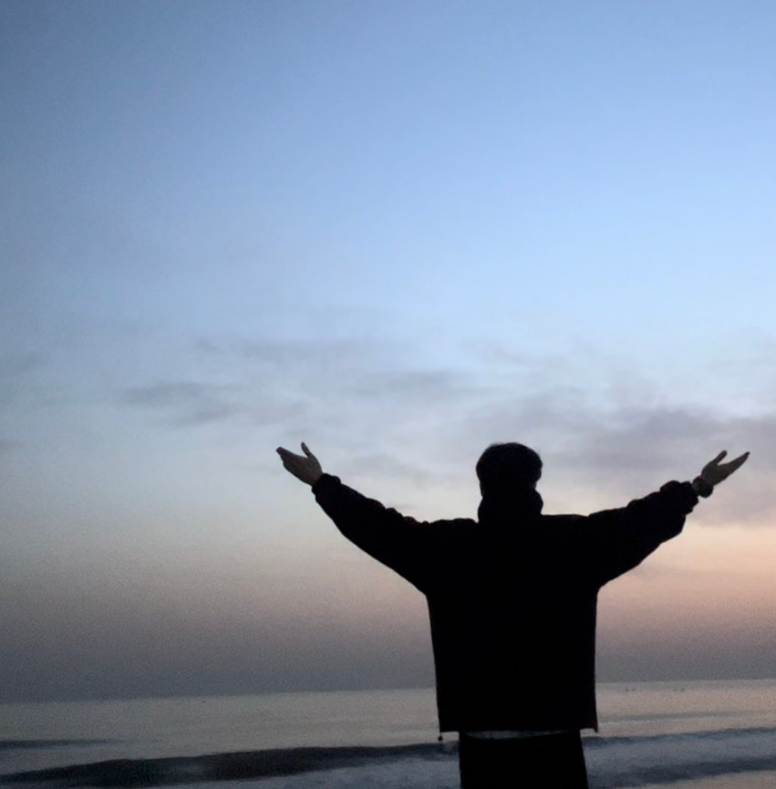
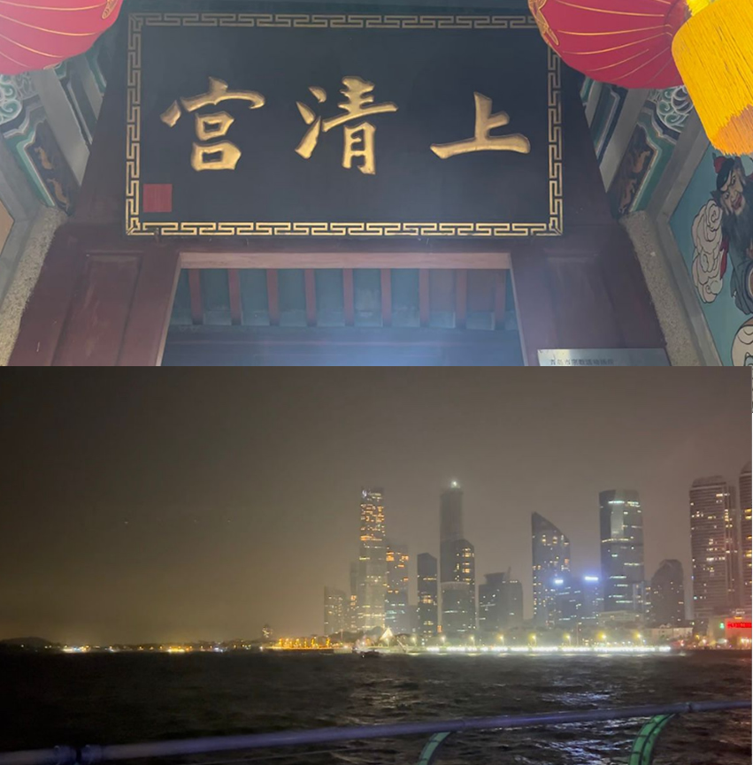
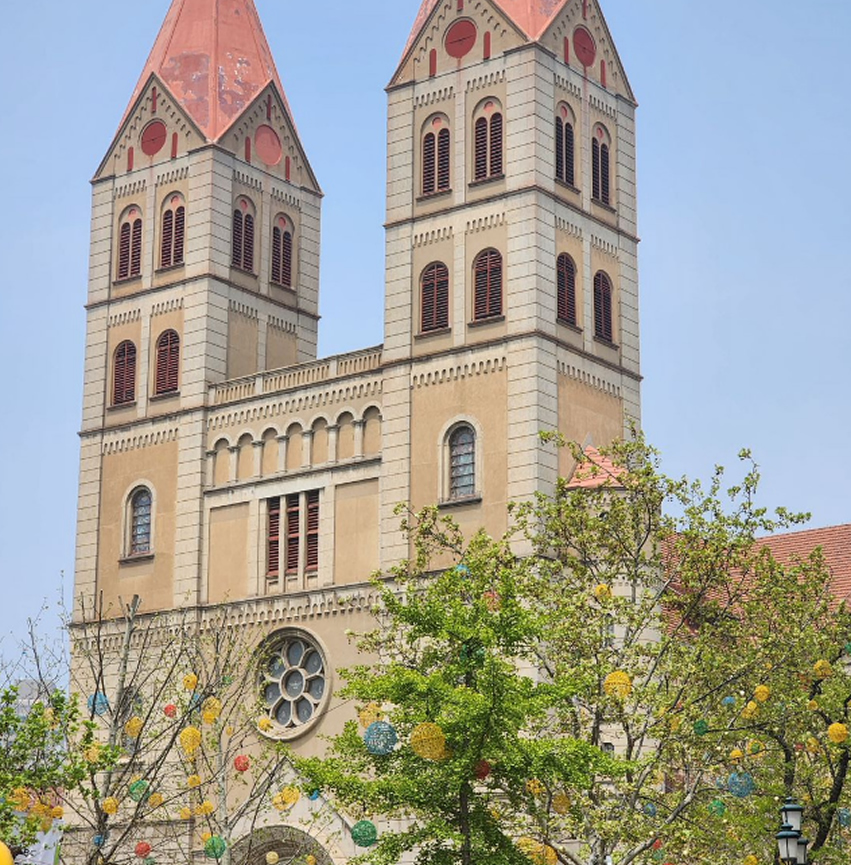
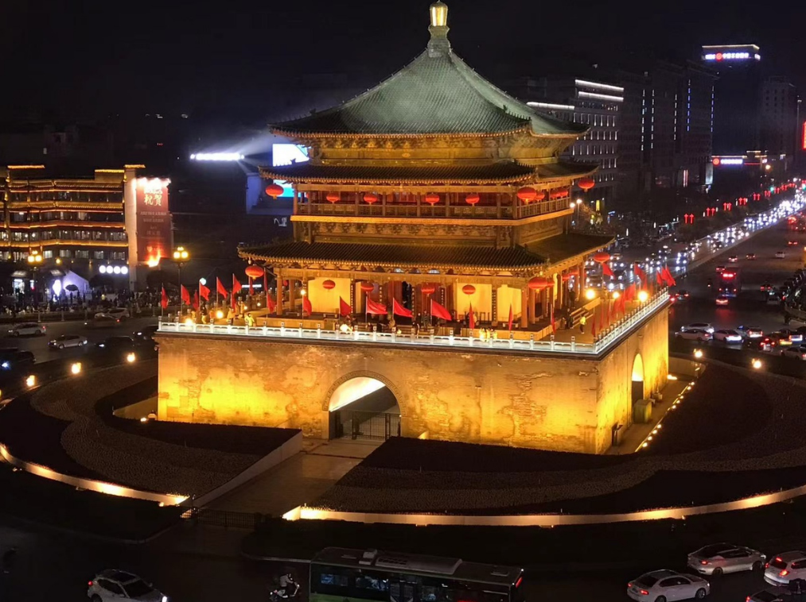
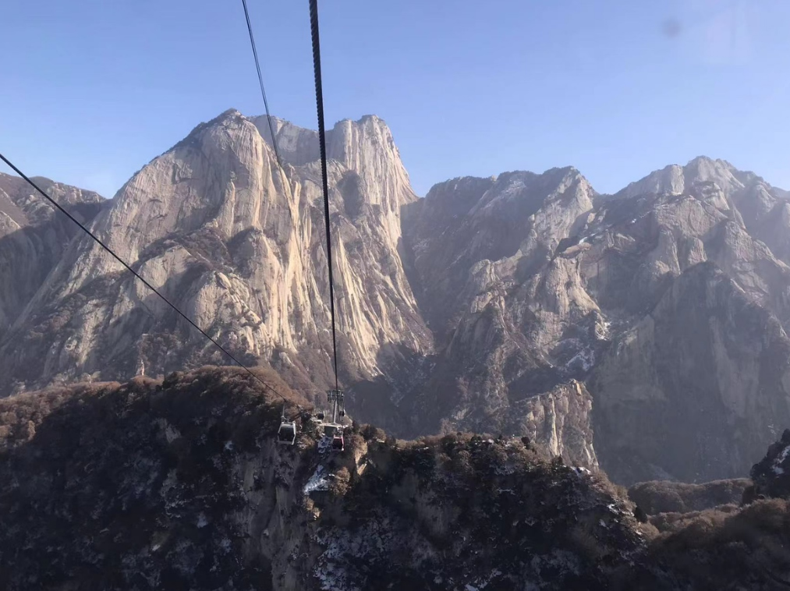
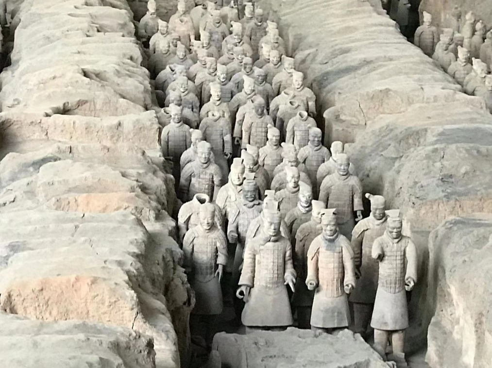
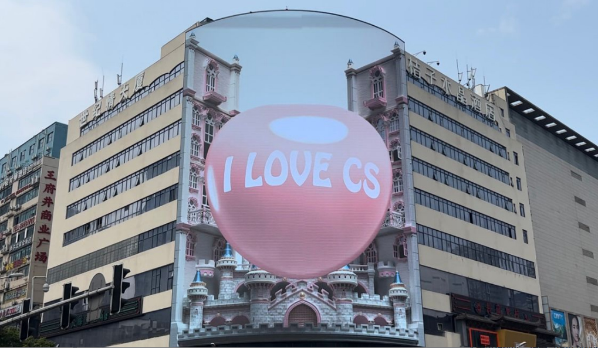
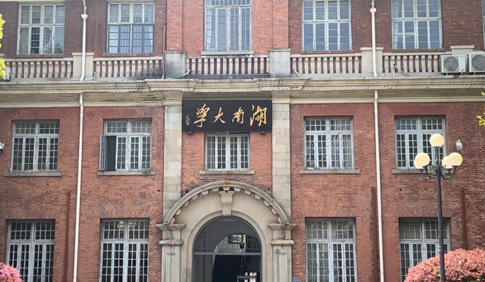
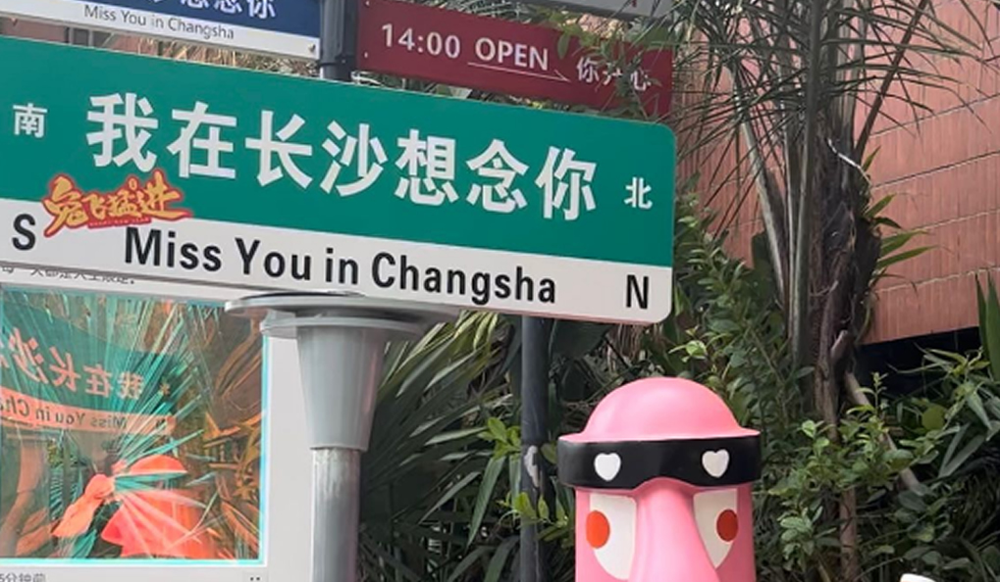

青岛 青岛市是国家历史文化名城、中国道教发祥地。胶州湾自唐宋以来就成为北方重要港口，清光绪十七年（1891年），驻兵建制胶澳，1897年，德国租借建设港口和铁路，遂因“一港一路”而兴，民国十九年（1930年）改称青岛市，因有海中小岛“小青岛”、古渔村“青岛村”而得名。 青岛是2008北京奥运会和第13届残奥会帆船比赛举办城市，也是中国帆船之都，世界啤酒之城、联合国“电影之都”、 首批沿海开放城市、全国文明城市、 中国品牌之都。 |
||
|  |  |  |
西安 西安市是中国最佳旅游目的地、中国国际形象最佳城市之一，有两项六处遗产被列入《世界遗产名录》，分别是：秦始皇陵及兵马俑、大雁塔、小雁塔、唐长安城大明宫遗址、汉长安城未央宫遗址、兴教寺塔。另有西安城墙、钟鼓楼、华清池、终南山、大唐芙蓉园、陕西历史博物馆、碑林等景点。西安市拥有西安交通大学、西北工业大学、西安电子科技大学等7所“双一流”建设高校 。 |
||
|  |  |  |
长沙 长沙市是首批国家历史文化名城，历经三千年城名、城址不变，有屈贾之乡、楚汉名城、潇湘洙泗之称。战国时是楚国在南方的战略要地，曾为汉长沙国国都和南楚国都，历代均为湖南及周边的政治、经济、文化、交通中心。世界考古奇迹马王堆汉墓、四羊方尊、世界上最多的简牍均在长沙，岳麓书院是湖湘大地文化教育的象征， 凝练出“经世致用、兼收并蓄”的湖湘文化。长沙既是清末维新运动和旧民主主义革命策源地之一，又是新民主主义的发祥地之一， 走出了黄兴、蔡锷、刘少奇等名人。 |
||
|  |  |  |